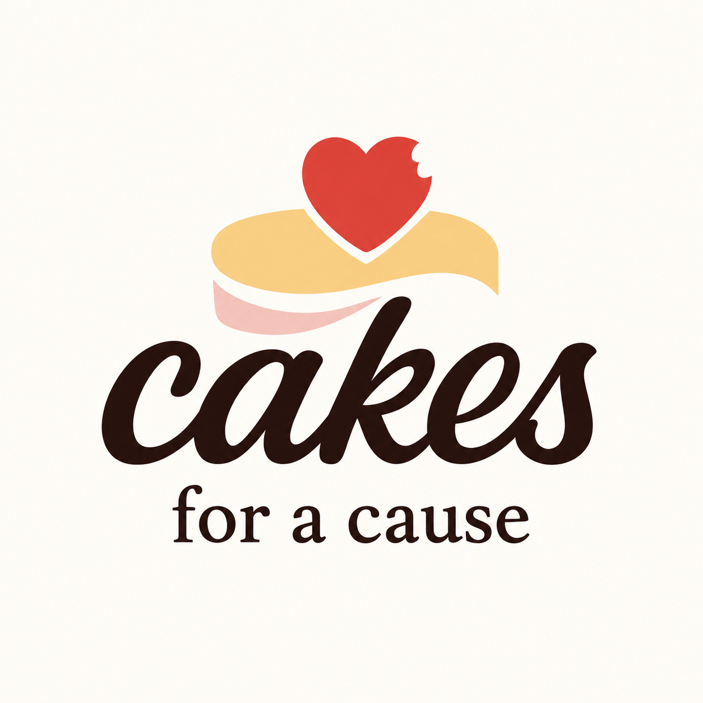
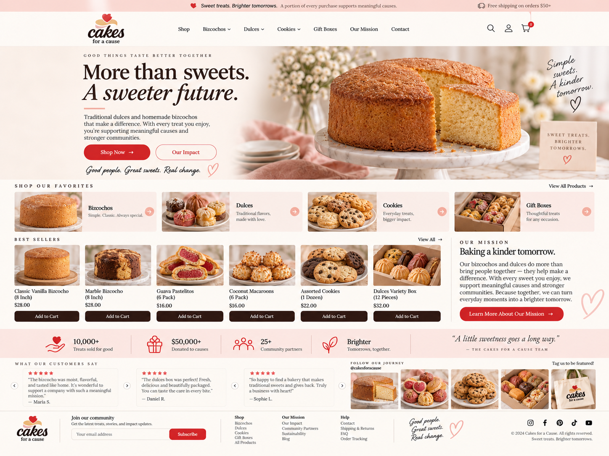
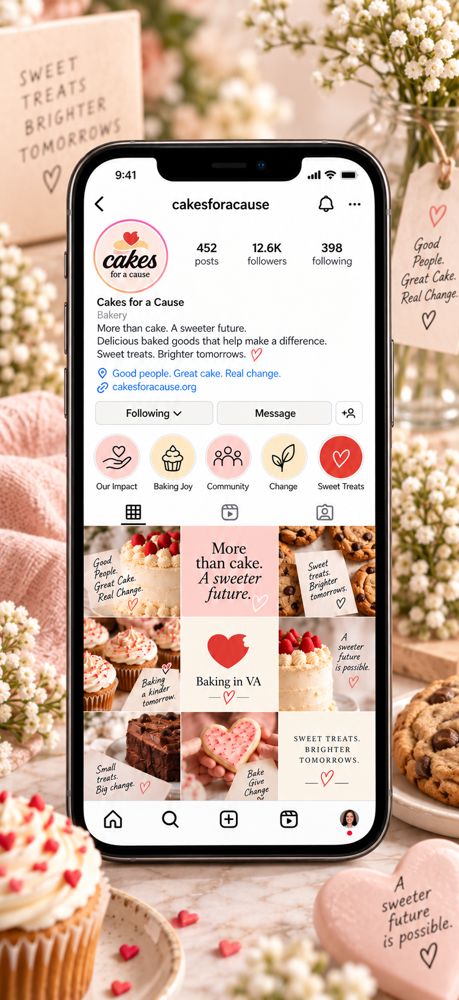
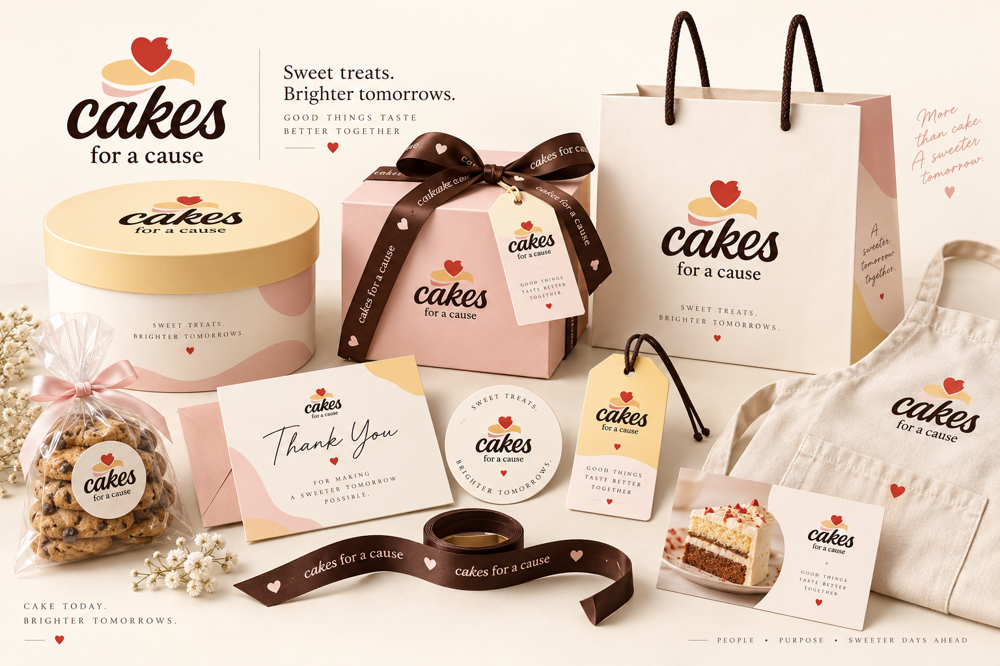

02 / Challenge
The question.
How could we bring together the signature yellow cake, the emotional strength of single mothers and the inviting look of a bakery — without letting any one element overshadow the others?
Case Study / 05
A warm identity and digital touchpoints for a purpose-led bakery concept.

01 / Cakes for a Cause · Logo01 / Context
We met the founder of Cakes for a Cause while she was working to build a foundation dedicated to helping single mothers. To raise funds for that mission, she bakes and sells cakes. Her signature is a yellow cake — a simple, recognizable product with a much bigger purpose.
We wanted to tell a story about mothers facing difficult circumstances, while honoring the love that remains intact in their hearts. At the same time, the brand still needed to look and feel like a bakery: warm, welcoming and immediately recognizable.
02 / Challenge
How could we bring together the signature yellow cake, the emotional strength of single mothers and the inviting look of a bakery — without letting any one element overshadow the others?
03 / Objectives
04 / Process
Our work began long before the logo. Through a collaborative discovery process, we explored the brand's mission, vision, goals and the archetype — or personality — the founder wanted it to communicate. With that strategic direction in place, we moved into color-palette explorations and, finally, logo concepts. Each step informed the next.
05 / Solution
The creative direction set out to balance the familiar warmth of a bakery with the emotional purpose behind the foundation. The signature yellow cake inspired the visual story, while the idea of love remaining whole through hardship gave the identity a deeper meaning. The work was carried into the logo, brand sheet, website concepts and supporting applications.
THE THINKING BEHIND THE BRAND
A brand is more than a beautiful logo. Before choosing how Cakes for a Cause would look, we worked to understand what it stood for.
Understand the foundation she is building, whom she hopes to help and why baking is part of that mission.
Shape the brand's purpose and direction before making visual decisions.
Explore the character and emotions the brand should convey to its audience.
Translate those ideas into a visual language that still feels like a bakery.
Develop logo options inspired by the yellow cake and the human story behind the mission.
06 / Visual explorations
From the identity and color direction to the website and applications, each piece connects back to the brand's purpose.




07 / Results
We developed a strategy-led creative direction and a cohesive set of brand materials grounded in the founder's mission. The work brought together brand discovery, color exploration, logo concepts, identity guidelines and visual applications for web and beyond.
This case study documents the branding work. Fundraising or community impact figures have not been provided.